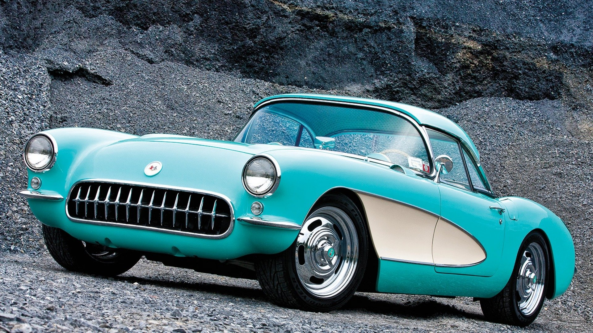

Corvette
Bakgrunn
Hovedmålet til Chevrolet når dei lagde Corvette, var å lage sportslege bilar. Dei første modellane var ikkje av dei kraftigaste, berre med 150 hestekrefter, produsert av ein rekke-seks motor. Men etter kvart kom dei med 7,4 liters motorar som ytte heile 450 hestekrefter. I 1972 var det oljekrise i amerika. Staten innførte reglar om størrelsar og hestekrefterpå motorar. Derfor er modellane før 1972 vert ein del meir. Corvette driv fortsatt på i dag, og er framleis amerikas beste sportsbil.
LOGO
Viktige periodar
1953-1962

Den første modellen av Chevrolet Corvette, også kjent som C1. Konseptbilen var veldig kjend og hadde store forventingar, men då den kom ut til folket, blei ein god del skuffa. Den holdt ikkje mål, og prosjektet blei nesten nedlagt.
1968-1982
Den tredje generasjonen, C3, er den mest likte og kjende modellen. Utsjånaden er heilt unik, og ingen andre amerikanske bilar kan måle seg med denne generasjonen. Den er eit amerikansk ikon uten like. Bildet er teke med Sogndal som bakgrunn.
2013-2018
Produksjon av den sjuande generasjonen driv framleis på. Bilen er eit absolutt råskinn, med 755 hestekrefter. ZR1en er den raskaste serieproduserte bilen i amerika rundt ei bane. Det er fordi den er både rask og har gode svingeeigenskapar.
2022
Generasjon 8 er spådd til å bli sett i produksjon i 2022. Dette er berre spekulasjonar lagd av miljøet rund Corvette. Det er heller ingen garanti at denne generasjonen vil sjå slik ut heller. Ryktene seier at den vil ha motoren bak i staden for framme, noko som Corvette prøvde på 60-talet.